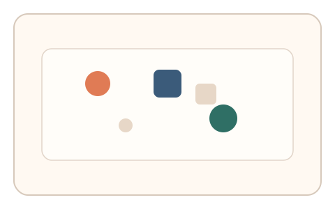
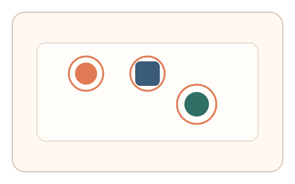
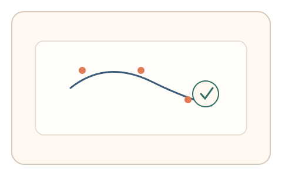

#107
Morphological Analysis - Combination Batches
已扩展
扫描‑显著性双证
画面短闪后点击三个最显著点，再拖拽标注扫视路径，以点击顺序与路径一致性验证真实性。
概念原文
画面短闪后用户点击 3 个最显著点，再拖拽标注扫视路径，系统比较点击顺序与路径一致性。任务结构为短序列，信号形态为注意力分布与搜索路径。
双通道捕捉“注意力组织方式”。
研究背景
显著性点选择与扫视路径体现注意力组织方式。双通道记录可捕捉一致性与自然的探索节奏，提升对脚本的区分度。
核心机制
- 短闪呈现复杂画面。
- 用户点击三个最显著点。
- 用户拖拽标注扫视路径。
- 比较点击顺序与路径一致性。
用户流程
- 步骤 1：用户看到短闪画面。
- 步骤 2：用户点击三个最显著点。
- 步骤 3：用户拖拽标注扫视路径并判定。
判定信号
显著点点击顺序
人类注意力会形成稳定的显著点优先级。
扫视路径形态
真实用户的路径包含自然的探索节奏。
判定逻辑
点击顺序与路径需符合人类分布且一致性合理；过度完美或随机判异常。
对抗面
- 脚本基于显著性模型直接选择
- 重放真实用户的路径序列
防御与缓解
- 随机化画面内容与布局
- 加入轻微噪声降低模型预测
- 叠加反应时与停顿信号
可达性与风险
提供更长展示时间与更少显著点要求，支持键盘替代。
- 短闪可能导致真实用户漏检
- 视觉障碍用户难以完成
可视化状态

状态 1：短闪画面
复杂画面短时闪现。

状态 2：显著点点击
用户点击三个显著点。

状态 3：路径判定
比较点击顺序与扫视路径。
参考资料
Visual attention
说明显著性与注意力选择机制。
Salience (neuroscience)
说明显著性与注意力组织。